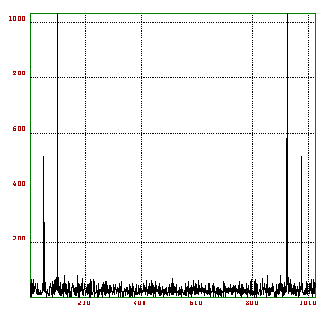

Shows you
EULER stores a polynomial a+bx+...+cx^n in the form [a,b,...,c]. Note, that this is different from MatLab. It can evaluate a polynomial with Horner's scheme
>polyval(p,x)
where x can be a matrix, of course. If you want a more exact answer in case of a badly conditioned polynomial, you may use
>xpolyval(p,x)
You may add an additional maximal number of iterations. This function uses the exact scalar product for a residual iteration. Of course, it is slower that Horner's scheme.
One can multiply polynomials with
>polymult(p,q)
or add them with
>polyadd(p,q)
The polynomials need not have the same degree.
>polydiv(p,q)
divides p by q and returns the multiple values {result,remainder}.
>polytrunc(p)
truncates a polynomial to its true degree (using epsilon). In UTIL
>polydif(p)
is defined. It differentiates the polynomial once. To construct a polynomial with prescribed zeros z=[z1,...,zn]
>polycons(z)
is used. The reverse is obtained with
>polysolve(p)
This function uses the Bauhuber method, which converges very stably to the zeros. However, there is always the problem with multiple zeros destroying the accuracy (but not the speed of convergence).
Polynomial interpolation can be done with
>d=interp(t,s)
where t and s are vectors. The result is a polynomial in divided differences (Newton) form, and can be evaluated by
>interpval(t,d,x)
at x. To transform the Newton form to the usual polynomial form
>polytrans(t,d)
may be used.

Interpolation in the roots of unity can be done with the fast Fourier transform
>p=ifft(s)
Then p(exp(2*pi*i*k/n))=s[k+1], 0<=k<n-1. For maximal speed, n should be a power of 2, or at least have many low order factors. The reverse function evaluates a polynomial at the roots of unity simultaneously
>s=fft(p)
Note, that polynomials have the lowest coefficient first. Both functions are most often used in computations of trigonometric sums. The example file contains a demonstration.
If A is a matrix
>fft(A)
will compute the two dimensional Fast Fourier Transform of A. This time, the number of columns and rows of A must be power of 2. ifft(A) returns the inverse.